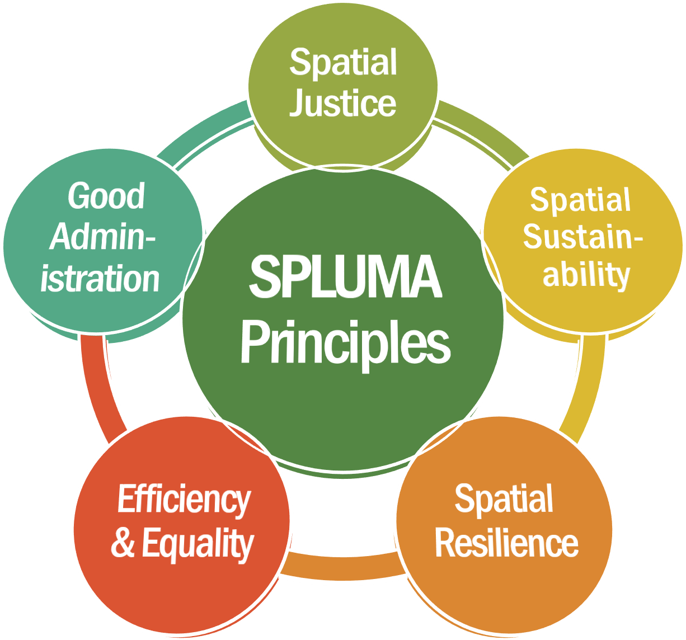
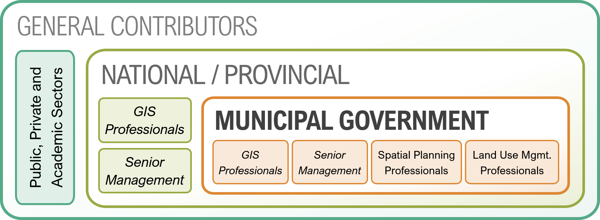
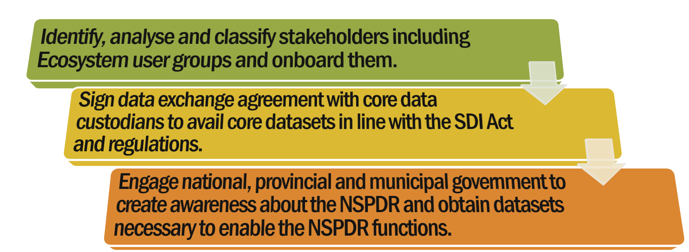
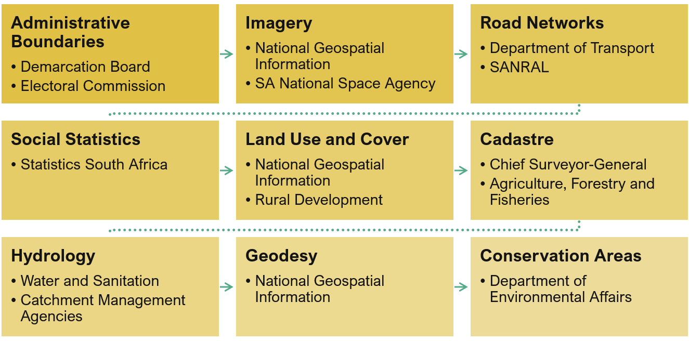
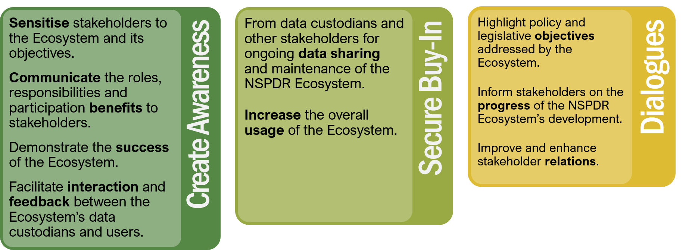
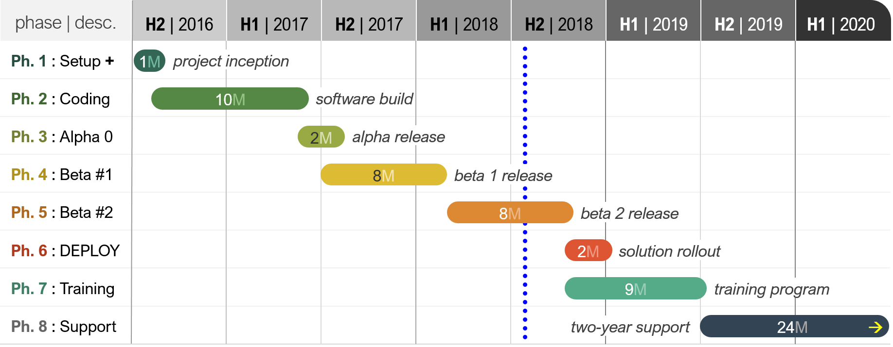
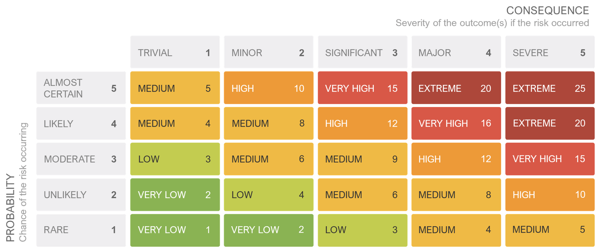

NSPDR & E-Lodgement
NSPDR & E-Lodgement
ABSTRACT
The goal of enhancing the coordination and sharing of spatial data amongst the different spheres of government has long been a priority of the Department of Rural Development and Land Reform (DRDLR). This goal gained urgency with the passing of the Spatial Planning and Land Use Management Act (SPLUMA) in 2013, wherein the government was mandated to develop mechanisms that support and strengthen the capacity of provinces and municipalities, by adopting and implementing an effective spatial planning and land use management system. To give effect to this mandate, the DRDLR has embarked on a process to develop the National Spatial Planning Data Repository (NSPDR) and the E-Lodgement system to facilitate the development application process in municipalities. The NSPDR is a digital ecosystem for national spatial planning, enabling sharing of spatial planning information and data across all spheres of government and will support key objectives of the SPLUMA and the NDP.
The project aims to:
- Assist municipalities in the implementation of the SPLUM Act.
- Improve integrated planning by creating an ecosystem for sharing of spatial data among various spheres of government and other state-owned entities.
- Support the implementation of and compliance with multiple legislative and policy frameworks such as the NDP, PAIA and the SDI Act.
- Remove subjectivity from planning functions and move towards an evidence-based approach to planning and land use management.
- Develop mechanisms that facilitate effective and efficient collaboration amongst government departments, fostering alignment of their programs and budgets to the planning needs identified and specified in SDF/IDP processes
- Provide a digital platform for municipalities for lodgement and processing of development applications
- Facilitate the monitoring of defined KPI’s such as spatial budgets and SPLUMA compliance.
1. Introduction
1.1 Enabling SPLUMA
SPLUMA calls for the provision of a uniform, effective and comprehensive system of spatial planning and land use management. Through the provisions stipulated within the Act, and in accordance with the Intergovernmental Relations Framework Act, SPUMA requires that the national government must;
“…develop mechanisms to support and strengthen the capacity of provinces and municipalities to adopt and implement an effective spatial planning and land use management system.”
With the development of the NSPDR, the national government will now be able to facilitate access to spatial information that is required for integrated spatial planning when developing SDFs and land use schemes. It also will enable the horizontal and vertical alignment of spatial plans, as well as spatial budgeting and spending.
Furthermore, with the provision of an E-Lodgement component, it’ll be able to assist municipalities with the development applications process. Finally, the ecosystem will help in capacitating municipalities through the provision of an online electronic training facility.
1.2 Background
The NSPDR & E-Lodgement project was first conceptualised in to assist in the implementation of the Spatial Planning and Land Use Management Act (SPLUMA). The solution will enable the sharing of spatial planning information and data across all three spheres of government, and the private sector and will aid municipalities in their spatial planning and land use management needs.
The objectives the NSPDR are to; improve integrated planning by creating an ecosystem for sharing of spatial data among various spheres of government and other state-owned entities; remove subjectivity from the planning functions and move towards an evidence-based approach to planning through improving access to core spatial data; and develop mechanisms that will facilitate effective and efficient collaboration amongst government/sector departments to foster alignment of their programs and budgets to planning needs identified and specified in the PGDP/PSDF/SDF/IDP processes.
Along with SPLUMA, the NSPDR & E-Lodgement will support the implementation of and compliance with multiple legislative and policy frameworks such as the National Development Plan (NDP), Intergovernmental Relations Framework (IGRF) Act, and the Spatial Data Infrastructure (SDI) Act.
1.3 Target Users
The following use groups are targeted by the NSPDR & E-Lodgement solutions:
- Municipal senior management
- Municipal spatial planning professionals
- Municipal land use management professionals
- National, provincial and municipal GIS professionals
- National and provincial senior management responsible for M&E
- Contributors and users within the public, private and academic sectors

2. The Rationale
2.1 Why a Repository?
South Africa does not currently have a central repository that utilises spatial data and information for spatial planning, monitoring and evaluation, and coordinating purposes. One of the key challenges identified by the NDP when it comes to development of sustainable human settlements, is weak spatial planning and governance capabilities within government structures. Currently most departments have standalone databases that are being used for planning and reporting purposes, and these tools are not always accessible to the relevant officials. Planning is, therefore, often done in isolation, without any cognisance of associated needs and impacts from other services. An integrated planning approach which ensures harmony between environmental, social and economic factors on a given geographic space is therefore required to support effective spatial planning.
Section 21 of the SPLUMA emphasises the development of the Spatial Development Framework. Which must include the following: current and future spatial form, economy estimates, housing demand, a written and spatial representation of a five-year Spatial Development Framework (SDF) for the municipality. Through the NSPDR, municipalities will now be able to retrieve the required base data from government and the private sector, to generate spatial expressions of their spaces that demonstrate coordination, alignment and integration of existing sectoral policies.
2.2 What is E-Lodgement?
Rural municipalities are still overly reliant on paper-based systems when it comes to accepting, processing and tracking land development applications. This often results in undue delays regarding processing time, haphazard approvals or dismissals and incorrect land uses being allocated to a piece of land. Municipalities also do not have access to interactive monitoring and evaluation (M&E) mechanisms to assess compliance as required by SPLUMA regulations. The E-Lodgement application will allow municipalities to overcome these deficiencies and improve overall delivery of this key service to the public.
The monitoring of operational and capital expenditure in the public sector through the representation of projects spatially, is also not being carried out in any collaborative manner. Information from the E-Lodgement solution will enable more accurate and comprehensive monitoring.
3. Component Development
3.1 Data Repository
The vision of the NSPDR was to develop a central repository with the capability of storing, searching, retrieving and generating spatial information. An intuitive interface which allows for ease of use and better experience was developed. Users are able search according to information type, region and other descriptive criteria that are based fundamentally on the SDF development guidelines themes.
Several of the capabilities offered to users include geoprocessing and analysis tools those lacking desktop GIS, dashboards supporting monitoring and evaluation which enable municipal managers to report on key performance indicators within their boundaries. Service related information can be gathered from the public by means of the citizen reporting tool offering the municipal user an innovative way of determining citizen needs.
3.2 E-Lodgement
The aim and development of the E-Lodgement component was to provide a facility for the electronic lodgement, assessment and consideration of land development applications through a secure online portal that would be accessible to users on multiple platforms. Through dedicated workshops with provincial officials and use of guiding frameworks, a SPLUMA compliant workflow was developed that formed the basis for E-Lodgement solution development. The workflow is aligned to the required procedures of processing land development applications, from the commencement of the administration phase right through to the decisions phase. Moreover, the timeframes for the workflow are set according to the SPLUMA.
The system currently offers three main interfaces: NSPDR data administrator, the municipal administrator and the applicant. The data administrator plays a coordinating role of registering municipalities and their appointed officials to use the E-Lodgement system. The municipal administrators will manage their own municipality’s profile on the system. They are responsible for assigning municipal officials with appropriate user rights and restrictions and ensuring the correct administrative information is captured for the municipality. Municipal officials are responsible for processing development applications from the applicants.
Citizens will be able to lodge their development application on the municipality’s profile once they have registered themselves on the system. They are then able to view communications sent to them and track the progress of their application.
3.3 E-Learning
The ADKAR model was selected as the overarching training framework that would guide the design, development and facilitation of the training material for the NSPDR. The model considers various change management principles that are crucial for stakeholder acceptance of organisational changes that the project would bring.
The project team began by convening a training needs analysis workshop aimed at understanding the user needs. They determined existing skills and competencies amongst the various user groups through guided discussions. Addition factors that posed a risk to the successful implantation of the NSPDR were also defined. A set of recommendations where then made to the client.
Due to the diverse user groups that need to be trained (ranging from highly technical to administrative) and the geographic spread of users, a blended learning approach was recommended. This requires the identification of a select group of regional champions who will be trained as provincial trainers once the project is rolled out. The need to provide training throughout the country and at various levels of governance could then be met through the provision of a dedicated electronic platform to be accessed remotely.
The E-Learning platform was hence developed as an online learning tool dedicated to creating such an environment. Any user of the ecosystem is now provided with access to a full suite of training modules from within their own organisation. By means of an initial assessment, a learner’s ability and level of knowledge is determined to create the best possible learning path. The content and delivery method can then be chosen according to the identified learning level and/or special needs that may or may not exist.
4. Key Learning Areas
4.1 Stakeholder Management
An aggregated approach to communications and engagement with identified stakeholders’ group has proven to yield the best results due to the institutional dynamics at play in each individual environment. The levels of reception towards the NSPDR & E-Lodgement differed across the national and provincial department’s and the districts and local municipalities as illustrated in Figure 4 below.

The national stakeholders are open to the notion of improving current means of disseminating information and creating awareness of their own spatial holdings through collaboration with the NSPDR. They indicated that the project provides them with a platform for them to reach their external stakeholders and get a more accurate view of the information that is in the possession of other departments.
Provincial stakeholders perform a key supporting role in assisting districts and municipalities in the fulfilment of some their core functions from a spatial, land use and economic development point of view. They work closely with municipalities to ensure compliance with applicable sector policies. Provincial governments are embracing the solutions being developed as they will assist them in capacitating municipalities.
Most district municipalities offer corporate geospatial support to their municipalities and are responsible for housing and sharing of spatial information on behalf of the local municipalities the municipal stakeholders have, by far, been more receptive to the offerings of the project due to increasing demands for compliance from national departments and decreasing annual budgets. The opportunity offered by the NSPDR to capacitate their land use management and planning officials is appealing to the managers due to the lack of required skills and resources in their jurisdictions. Issues of connectivity and bandwidth are repeatedly being highlighted as an existing barrier towards utilisation of the system. E-Lodgement has attracted a lot of attention due to the opportunity to transition into an electronic means of managing development applications thereby improving their overall ability to deliver on a key municipal function.
Metropolitan municipalities demonstrated a stronger ability to manage their information with most of them having already developed their own electronic lodgement systems along with policies in place that govern dissemination of data and data quality management. They are also ahead of their counter parts when it comes to compliance with multiple legislative frameworks including SPLUMA and the prescriptions of the SDI Act.
Lack of response by officials and lengthy turnaround times in securing meetings with required officials from the identified stakeholder groups poses a challenge towards the project team meeting their desired engagement targets.
4.2 Data Acquisition and Management
Developing a thorough understanding of the true nature of spatial data contributions from national departments, district and local departments was critical to formulating an accurate picture of the inputs to NSPDR. A comprehensive data strategy was developed in which core spatial data sets (see Figure 5) and Spatial Development Framework data themes based on the bio-physical, built environment and socio-economic environment were identified. The custodians or owners of this information were approached to provide these datasets. The success rate in acquiring information and the quality of the data received varied across different stakeholders.
Common relationships and distinguishing factors in terms of data management at various levels of government became evident. The team members realised that the capturing of spatial information is widely geared towards fulfilling the internal needs of the organisations and meeting internal standards and not necessary aligned to requirements proposed by spatial data standards generating entities such as National Spatial Infrastructure Framework, the South African Bureau of Standards, and the International Standards Organisation.

A key finding was the lack of consistency and accuracy in terms of the capturing of spatial information that is meant to inform and support the objectives of the municipality’s developmental frameworks and land use schemes. The existing policies and guidelines that have been put in place to give direction to municipal planning are readily available, yet it is evident that these foundational principles are failing to be translated by those analysing and mapping the municipal spaces on the ground.
Measures are currently not in place to ensure the integrity and accuracy of data by those responsible for capturing and disseminating data. This can be attributed to a lack of required skills as well as a lack of implementation of legislation relating to spatial information management. The value of data and metadata overall is only appreciated by those who are working directly with it to inform their day-to-day activities and these are the individuals who are best able to ascertain the quality of contributions that can be made to the project. The burden of ensuring standardisation and the determination of quality by default will still lie with the user community who are reliant on spatial information to inform their strategies and plans.
In light of these findings, the need for agreements such as the NSPDR’s Spatial Data Partnership Protocol (an implementation protocol in terms of section 35(1) of the IGRF Act; the protocol establishes the terms and conditions for the sharing, usage and maintenance of spatial planning data), to be adopted by data custodians becomes pivotal to ensuring ongoing contributions of data are provided to the project within the prescribed formats and conditions. It will also ensure that stakeholders who agree to becoming contributors of spatial information to the system are accountable.
4.3 Marketing and Communications
The marketing and communications strategy for the project is built around three main principles of: creating awareness, securing by in and promoting ongoing dialogue with stakeholders. A breakdown of what each of the three principles entails can be found in Figure 6 below.
The decision to make use of multiple channels of communications has proven to be most effective in creating awareness and building interest around the NSPDR & E-Lodgement. By leveraging on existing platforms such as municipal planning forums, audiences that would not have had the means to host stand-alone engagement meetings, are also being reached. District and municipal stakeholders are showing an appreciation for the effort demonstrated by project team members who come out to meet with them in their own working environments. All these communication efforts are also being strengthened through strategic partnerships with entities who are mandated to offer specialised services across the provinces and are already active in these spaces.

Through directly engaging representatives from each stakeholder group, key understandings of the needs of the users are drawn which help to direct the development of deliverables as understood by the project team and informs future marketing approaches. Barriers towards successful utilisation of the NSPDR & E-Lodgement as communicated by the different stakeholder groups are documented and shared with the department for consideration.
Distribution of branded materials and use of an electronic communication platform has allowed stakeholders to remain connected with NSPDR as a solution and easily share the key message with individuals within their own work environments. The maintenance of open dialogue and communication by the project members with representatives has ensured that recent developments and milestones reached can be shared throughout the different phases of the project.
5. Project Methodology
5.1 Administration and Governance
The project is governed and managed according to the PRINCE2™ framework (Projects in a Controlled Environment) and the PMBOK™ (Project Management Book of Knowledge) project management methodology. The management of the project follows a phased approach with gateways after each phase, in which with the sign-off of certain project deliverables and/or documents is associated.
5.2 Scope Management
Scope management is the sole responsibility of the respective project managers. The scope for the project was defined in the Inception Report. With a detailed description and breakdown in the user requirements and the technical specification. The respective project managers established and approved the documentation for measuring the project’s scope, which included deliverable quality checklists and work performance measurements as and when required.
Proposed scope changes may be initiated by any of the project stakeholders and will follow the change request process as described in section 5.4 of this document. The client’s project manager is responsible for formally accepting the project’s final deliverable. This acceptance will be based on a review of all project documentation, testing results, and completion of all tasks or work packages and product functionality.
5.3 Schedule Management
The work breakdown structure (WBS) for the project consists of work packages, which correspond to the project deliverables and associated tasks. Work packages were finalised through close collaboration among project team members. This happened once the business/user requirements document was signed off. The schedule is maintained by the service provider’s project managers, with the client conducting regular quarterly schedule reviews. Schedule changes without cost or final project completion date implications were agreed to between the service provider’s project managers and the client project manager.

The WBS links back to the use cases, which identify the specific work packages that are performed to complete each deliverable. Use cases and priorities are set out by the project team and stakeholders. Resource optimisation and deliverable estimation techniques were used to determine the order of work packages and ultimately to calculate the project’s schedule, as shown in Figure 7 above. Project milestones that have been defined, as listed in the Inception Report, were done based on the project schedule and deliverables.
5.4 Change Management
The requirements and the scope of a project were agreed to before the start of a project. However, as new facts became known or events happened that impacted upon the project, changes become necessary and were managed according to our change control process.
The change control process being applied contains the following steps:
- Identify the need for a change
- Submit a change request to the project managers
- Log the request in the change log
- Evaluate the change in terms of impact on cost, risk, schedule and scope
- Internally review the change and propose a way forward
- Meet with the client who decides on whether to accept the change
- Present the change request to the project steering committee for approval
- If approved, the change is communicated to the team and any concerned stakeholders
One example of this process is E-Lodgement where functional requirements were not detailed. When it first came up for review it was clear that the understanding of this component was not mutually agreed upon by the service provider and the client. An ad-hoc change control process was initiated, and intense workshops were held in order to reach a consensus and plan the way forward.
5.5 Risk Management
The approach for managing risks includes a methodical process to identify, score and rank the various project risks (as per Figure 8). Every effort is be made to proactively identify risks ahead of time to implement a mitigation strategy as soon as possible. The risk register is maintained by the service provider’s project managers and used to document all risk mitigation actions taken by the project team.

Upon the completion of the project, during the closing process, the service provider’s project managers will analyse each risk as well as the risk management process. Based on this analysis, the service provider’s project managers will identify any improvements that can be made to the risk management process for future projects. These improvements will be captured as part of a lessons learned knowledge base and will be included as part of the project close-out documentation.
5.6 Quality Management
All team members from the service provider and the client play a key role in quality management. It was imperative that teams ensure work was completed at an agreed level of quality from the individual work packages to the final project deliverable.
6. Moving Forward
The vast array of stakeholders engaged and large and disparate amounts of data to be acquired makes this a complex project to deliver. The project also provides significant insights into the nature and extent of data available to support spatial planning activities.
The project will significantly change the way municipalities, particularly in rural areas, undertake their spatial planning and land use management activities.

ACKNOWLEDGEMENTS
We wish to acknowledge the Project Steering Committee and management of the Department of Rural Development and Land Reform for the support and guidance provided throughout the implementation of this project.